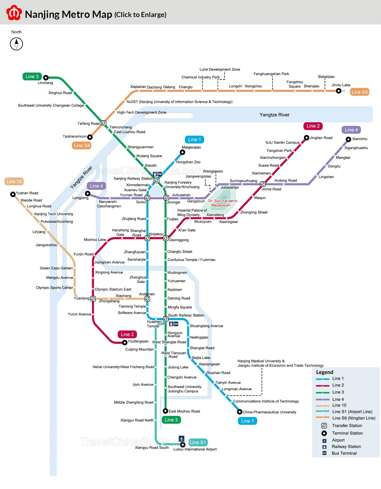
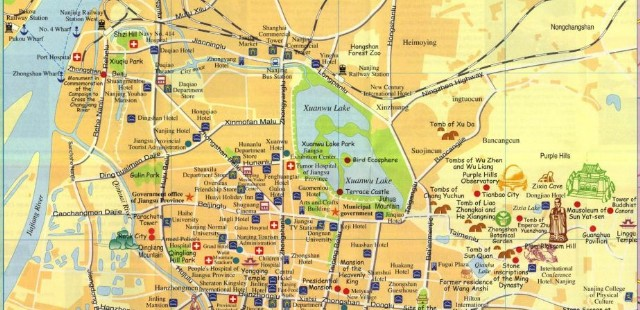

Geography of Nanjing

Nanjing, with a total land area of 6,598 km2 (2,548 sq mi), is situated in the heartland of the drainage
area of the lower reaches of the Yangtze River,
and in the Yangtze River Delta, one of the largest economic zones of China.
The Yangtze River flows past the west side and then the north side of Nanjing City, while the Ningzheng
Ridge surrounds the north,
east and south sides of the city. The city is 650 km (400 mi) southeast of Luoyang, 1,200 km (750 mi)
south-southeast of Beijing,
300 km (190 mi) west-northwest of Shanghai, and 1,400 km (870 mi) east-northeast of Chongqing.

The Yangtze River flows downstream from Jiujiang, Jiangxi, through Anhui and Jiangsu to the East China
Sea.
The northern part of the lower Yangtze drainage basin is the Huai River basin and the southern part is
the Zhe River basin;
they are connected by the Grand Canal east of Nanjing. The area around Nanjing is called Xiajiang (下江,
Downstream River) region,
with Jianghuai dominant in the northern part and Jiangzhe dominant in the southern part.

The region is also well known as Dongnan (東南, South East, the Southeast) and Jiangnan (江南, and River South,
South of Yangtze).
Significance of the city: Nanjing is one of China's main business, industrial and education centers.
Throughout history, it has often been an imperial capital city or one of the biggest cities in the
world.
Nearby cities: Shanghai (242 km/150 mi), Hangzhou (225 km/140 mi), Huangshan (262 km/163 mi), Suzhou (215
km/135 mi)
Elevation: 15 m (56 ft)
Municipality terrain: The city is in the Yangtze River basin plain with the Yangtze River to the west and
the Ningzheng River on the other sides. Mountains dot the plain.
Main rivers: Yangtze River and Qinhuai River.